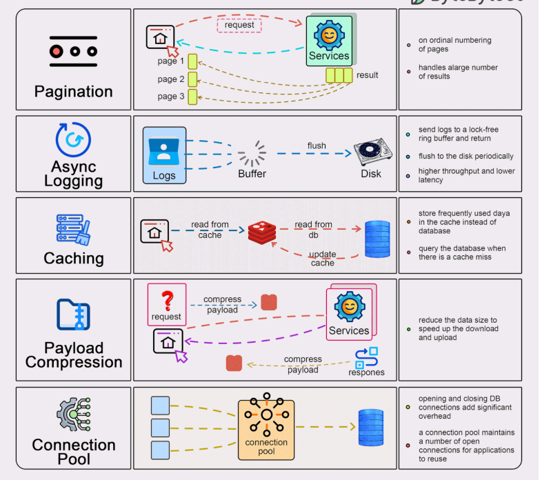

How to Improve API Performance

Pagination
- Limits the amount of data returned in a single API response, reducing server load and response time.
- Improves user experience by fetching only the required subset of data instead of loading everything at once.
- Common pagination strategies: offset/limit(Traditional Pagination), cursor-based pagination (more efficient for large datasets).
- offset/limit: Inefficient for large datasets because the server has to scan through previous records to get the required set
(e.g., scanning through 1 million records to get the 10,000th to 10,100th records).
- cursor-based pagination: If fetching a list of users sorted by ID, the cursor can be the last user ID on the current page. For the next page,
the API fetches users with an ID greater than the cursor value.
- Tricky point: Handling edge cases like missing pages, or items changing during pagination (ensure consistency).
Async Logging
- Moves logging operations to asynchronous processes to avoid blocking the main API execution thread.
- Improves performance by offloading tasks such as writing logs to disk or a logging service.
- Can use a message queue (e.g., Kafka, RabbitMQ) to store logs asynchronously.
- By using multithreading, batch processing, and a retry mechanism, you can significantly improve the performance of API calls and record processing.
The key is to:
- Fetch and process records concurrently.
- Handle paginated responses efficiently with a cursor-based approach.
- Implement retry logic to ensure resilience in case of network failures.
- This approach minimizes bottlenecks and optimizes system resource usage, improving the overall performance of your API-consuming application.
- Tricky point: Ensuring log consistency when using asynchronous logging (potential log loss during crashes).
Caching
- Caches frequently accessed data to reduce database queries and repetitive processing.
- In-memory caches (e.g., Redis, Memcached) can drastically improve performance for read-heavy APIs.
- How Caching Improves API Performance:
- Reduces Latency and Response Time
- Reduces Database Load
- For APIs that pull data from external services or APIs, caching reduces the number of outgoing network requests, lowering bandwidth usage and potentially reducing costs if using third-party APIs.
- Improves Scalability: Caching allows the server to handle more requests by offloading repetitive tasks and using fewer resources for each request.
- Enables High Availability and Reliability
- Reduces Computational Overhead
- Consider caching strategies: time-based expiration (TTL), cache invalidation upon data updates.
- Tricky point: Cache invalidation is hard — improper cache expiry can cause stale data issues or cache thrashing.
Payload Compression
- Compresses the response payload (e.g., using Gzip or Brotli) to reduce data transfer size, improving network performance.
- Particularly useful for APIs with large responses, like JSON or XML data.
- Ensure that clients are capable of decompressing the payload.
- Tricky point: Balance between compression level and CPU overhead. Excessive compression can slow down server processing.
Connection Pooling
- Reuses established network connections instead of creating new connections for every request, saving time and resources.
- Reduces the overhead of creating and tearing down connections (especially for database connections).
- Connection pools maintain a pool of active, reusable connections (e.g., for databases or external APIs).
- Tricky point: Properly sizing the connection pool to prevent resource exhaustion or underutilization.
Tricky Points about API Performance (Potential Interview Questions)
- How do you handle rate limiting? Design a strategy for protecting the API from abuse or heavy traffic while ensuring fair usage (e.g., token bucket, leaky bucket).
- How do you handle large payloads? Consider splitting payloads, using streaming APIs (e.g., chunked encoding), and ensuring client-side handling of partial data.
- How to avoid database bottlenecks? Discuss read/write optimization techniques, indexing, query optimization, and database replication or sharding.
- How do you handle timeouts and retries? Implement client-side retries with exponential backoff to handle transient failures. Proper timeout configurations are essential to avoid resource hanging.
- How do you ensure API scalability? Talk about horizontal scaling (load balancers, stateless APIs), vertical scaling, and distributed architectures (microservices).
Other Tips for API Performance
- Optimize database queries: Ensure queries are optimized, with proper indexes and no redundant joins or subqueries.
- Monitor API metrics: Use tools like Prometheus, Grafana, or New Relic to monitor performance metrics (latency, throughput, error rates) and adjust accordingly.
- Implement rate limiting: Use rate limiting and throttling techniques to avoid overloading your API under high-traffic conditions.
- Versioning: Implement API versioning to ensure backward compatibility when making changes to the API, avoiding breaking changes for clients.
- Use CDN for static resources: Offload delivery of static content (e.g., images, CSS, JS files) to a CDN for faster access and reduced server load.